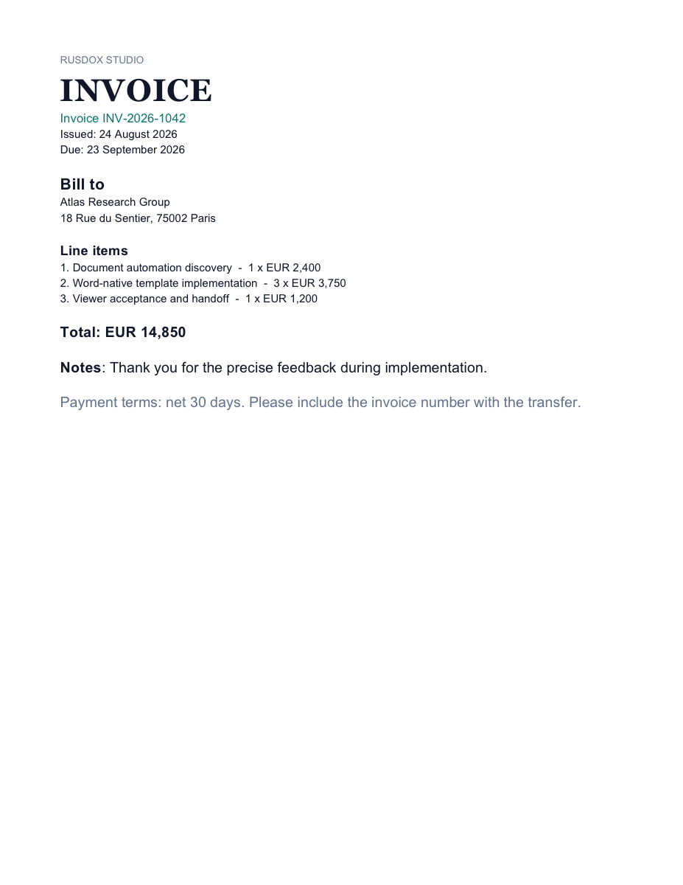

invoices · operations
Consulting Invoice
A compact Word-designed invoice with customer details, line-item loop, totals, and payment terms.
By Othmane Blial · MIT · v1.0.0
Documented inputs
invoice.numberHuman-readable invoice number.invoice.clientClient name and address.invoice.itemsLine items with description, quantity, rate, and amount.
All table labels remain text; the template contains no decorative or content images.